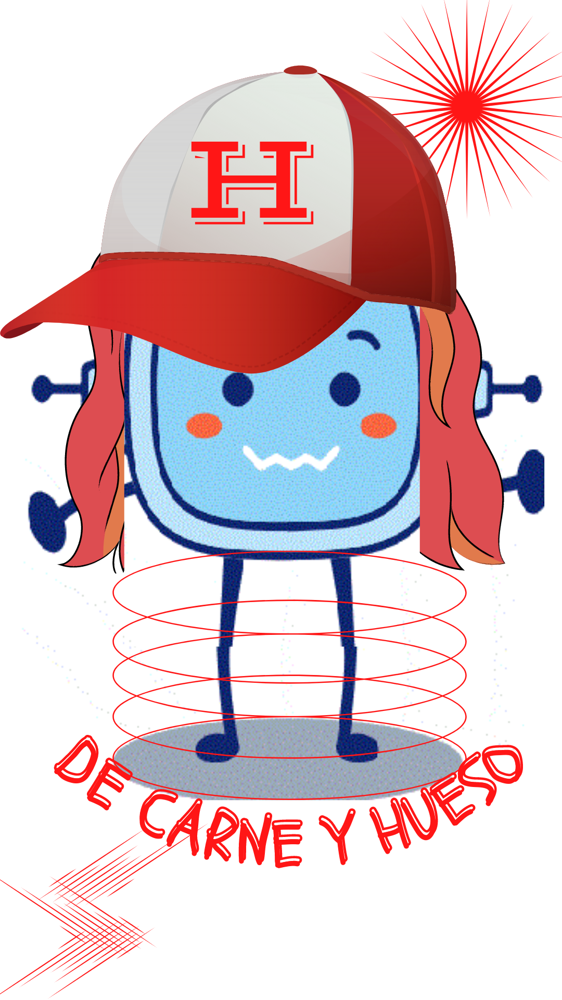

Te felicito porque te has hecho oír.
Eres capaz de hacerlo a través del lenguaje verbal y no verbal, defendiendo tus ideas con buenos argumentos para derrotar el mal.
Lectura facilitada
¡Felicidades!
Has derrotado a Narcisa Vulcana.
Defiendes tus ideas con buenos argumentos.
Defiendes tus ideas usando el lenguaje verbal y no verbal.